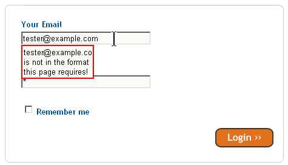

Making legacy pages work with Web Forms 2
The Web Forms 2 specification, part of the HTML5 work at WHAT WG, makes it easier to write and validate forms - but some compatibility problems with legacy scripts exist. I have seen legacy content run into the following classes of problems:- Un-intended form validation prevents submitting forms
- Legacy scripts are confused by new DOM properties
- Some properties are resolved as URLs
- Form.submit() throws error if form validation fails
Unintentional validation
Forms need validation. User-friendly, helpful, client-side validation. Plenty of validation examples exist, using JavaScript of various flavours. Some of these JavaScript libraries work by looking for specific attributes the webmaster adds to the form markup.
If these custom attributes have the same name as Web Forms 2 attributes, they can cause validation to kick in, sometimes in ways the webmaster did not expect. This built-in validation will prevent the user from submitting the form, so the form and possibly the web site might become unusable.
Here is one example of un-intended validation: trying to log in to Squidoo would show a somewhat cryptic error message saying the E-mail address "is not in the format this page requires".
Here is an excerpt of their old form code (the issue has since been fixed by them):
<input required="true" pattern="email" type="text" value="" tabindex="1"
name="email_address" id="email_address" />
The problem with that is that the pattern attribute should be a regular expression.
Something like this:
<input required="true" pattern=".*@.*\..*" type="text" value="" tabindex="1"
name="email_address" id="email_address" />
would turn the "pattern" attribute into a proper regular expression. (I know that's simplistic, I just don't want to divert into the endless debate about finding the perfect regexp for E-mail addresses..).
Now, the validation script needs to be updated to take that into account of course. First of all, it can "learn" not to validate forms in WF2-browsers since that is handled by the browser. For example on Squidoo, they have a function called validate that receives a form as its argument. They could write
function validate(form){
if(form.checkValidity){ return; } // browser has built-in validation
..then rewrite the part that checks the "pattern" attribute for the other browsers to read the regexp directly from the pattern.
They could of course do even better and use an
<input type="email" required name="email_address">to make the browser's built-in validation check if the input looks like an E-mail address before allowing the form to be submitted.
If for some reason fixing it properly is not an option, they could also fix such a problem by throwing in a workaround. This is sort of the fireman's approach, and a correct fix is naturally much better. Below is an example of how to listen for the "invalid" event which fires when form validation finds invalid fields, and remove problematic "pattern" attributes to allow submitting forms anyway.
document.addEventListener( 'invalid' ,
/* when an invalid event occurs, the user is trying to submit a form with invalid fields */
function(e){
var input=e.target;
if(input.validity.patternMismatch){ /* value crashed with pattern attribute */
e.target.removeAttribute('pattern');
}
e.preventDefault(); /* do not show validation error */
if(validate(e.target.form)) e.target.form.submit(); /* make sure form actually submits */
}, false );Legacy scripts confused by new DOM properties
FreeParking's domain lookup is broken in Opera 9. The reason is that the script finds input.min and input.max properties, both are empty but since they are not null the script thinks the domain name is supposed to be a number.
The only real fix for that is to audit your custom attributes and make sure they do not conflict with Web Forms 2. The fireman could of course also check if a WF2-browser is used, meaning
if (e.numeric || (e.min != null) || (e.max != null))becomes for example
if ( e.willValidate==null && ( e.numeric || (e.min != null) || (e.max != null) ) )since if willValidate is defined the UA would handle min and max with its built-in validation. (Of course they could also just remove the null comparison since the empty strings will evaluate to false anyway - but they may want to be able to set an empty min or max attribute to trigger number validation..)
Some properties are resolved as URLs
Web Forms 2 lets you write for example <input type="submit" action="/bar.cgi"> or <select data="/mydatafile.xml"></select>. (Click the attributes for more information about using them).
The attributes "action" on INPUT and "data" on SELECT elements are expected to be URLs. URLs are typically resolved according to the address of the page the script runs on. This means that when GMail did the following:
input.action=5;
.
.
switch(input.action)
case 5:
// do something
the resolved value of input.action was not the expected "5", it was "http://mail.google.com/mail/5", and the switch statement failed miserably at working out what the expected "action" of that button was.
To fix this type of problem, avoid custom attribute names that conflict with Web Forms 2. You can also use .setAttribute() and .getAttribute() since the latter will return the un-resolved version of the URL.
Form.submit() throws an error if validation fails
If custom attributes or legacy scripts trigger unintended form validation, calling the submit() method of the form will throw an error. For example
<input name="foo" required >
.
.
form.submit();
will cause an error similar to this one in the JavaScript console:
JavaScript - data:text/html,<form><input name="foo" required></form> <a href="javascript:document.forms[0].submit()">test</a>
Javascript URL thread: "javascript:document.forms[0].submit()"
Error:
Unhandled exception: [Object DOMException]
code: 12
message: SYNTAX_ERR - Form didn't validate in submit()
Backtrace:
Line 1 of unknown script
document.forms[0].submit();
To fix this, if the validation errors are genuine you can call form.checkValidity() before form.submit() to make the browser report validation errors to the user. For example:
if (form.checkValidity ){// browser supports validation
if( ! form.checkValidity()){ // form has errors,
// the browser is reporting them to user
// we don't need to take any action
}else{ // passed validation, submit now
form.submit();
}
}else{ // browser does not support validation
form.submit();
}
This snippet will ensure validation errors are shown to the user.
If, on the other hand, you want to submit the form regardless of validation errors it would be a good idea to change your custom attribute names to avoid the invalid state. Otherwise you need to iterate over the form elements, check element.validity.valid for each to find the problem, and remove or alter the validation attributes that caused an unwanted validity state.
HTML5 and Web Forms 2 gives web developers new and convenient tools, and if you know what the issues are fixing problems with legacy content is relatively easy. I hope this article was useful and that it inspires you to investigate the possibilities of using Web Forms 2 features for your forms.
A shorter version of this article was first posted on my blog.
This article is licensed under a Creative Commons Attribution, Non Commercial - Share Alike 2.5 license.
Comments
The forum archive of this article is still available on My Opera.
No new comments accepted.